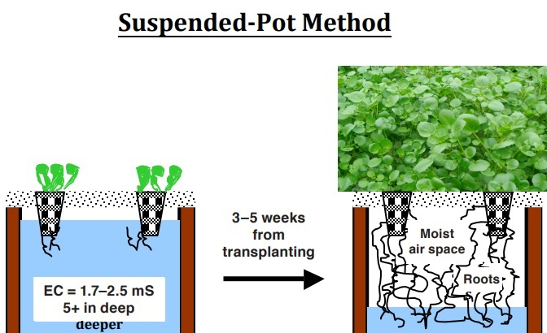
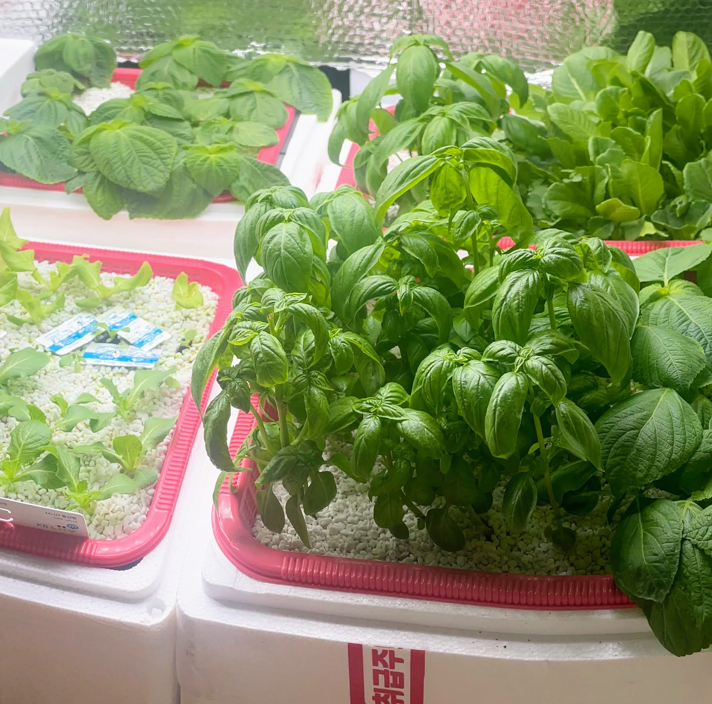
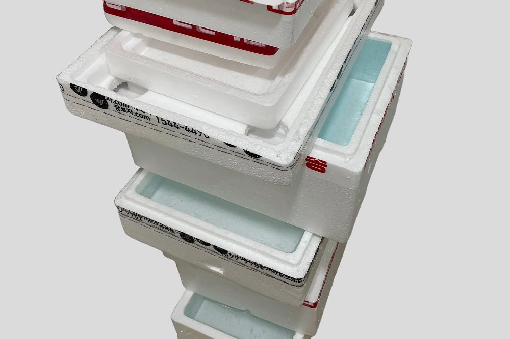
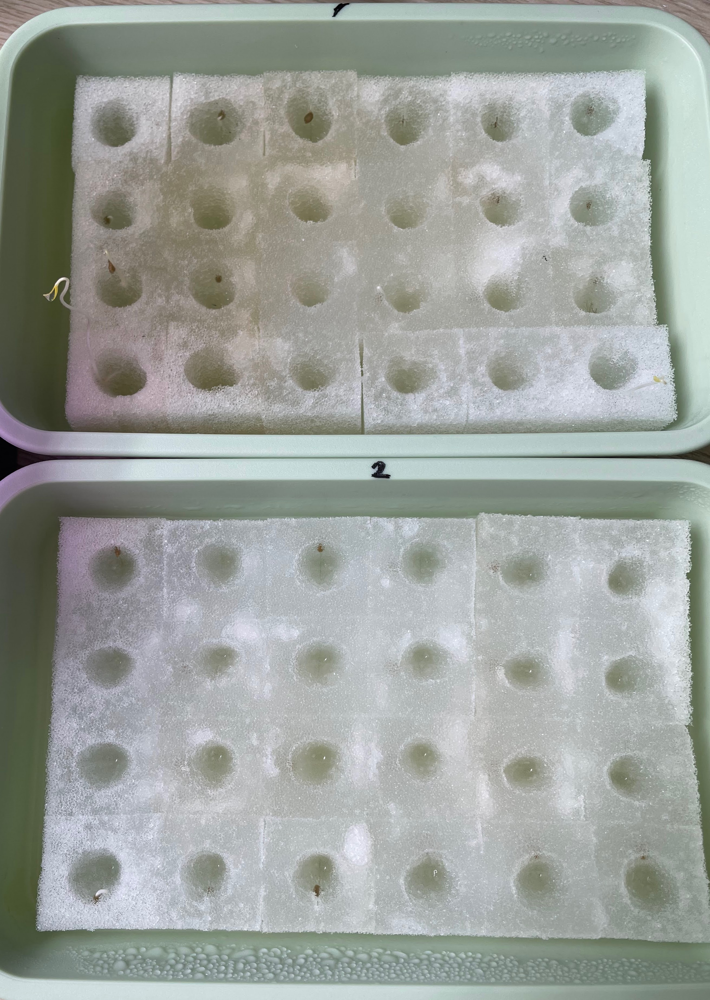

Kratky Method
Plundered from
- Growing Direct-Seeded Watercress by Two Non-circulating Hydroponic Methods
- Three non-circulating hydroponic methods for growing lettuce
Kratky method is a hydroponic method similar to a deep water culture method (DWC). The prominent difference of this method is a fixed upper panel for empty space.

The space offers air to a root in addition to dissolved oxygen. The author mentioned that this method has better yield than a deep water culture method with a floating panel.
The article is focused to present a practical and feasible how-tos, as it's intended for recommended the method to others. My experience to follow the procedures in the article for each topic.
Cultivar
The article is about a watercress, I thought the method is applicable to any leafy greens (plants with edible leafs). For the first time, I tried a perilla, rocket, basil, romaine, and cherry tomato.
Leafy greens are less picky for hot and wet temperature with a short crop cycle. I suggest to try a leafy green if you don't have prior experience of edible plants. Away from picky leafy greens with long crop cycle, like a spinach and celery.

Equipments
Fertilizer: Any water-soluble chemicals (non-blended) can be combinated if you can understand combinations. Chem-Gro blended fertilizer mentioned in the article is an universal blended hydroponic fertilizer. Other hydroponic guidelines from Cornell CEA also suggests to use such a blended hydroponic fertilizer for the first choice. Hydroponic fertilizers are separated in A and B broth, and those broth should not be mixed directly. Don't buy a water hydroponics fertilizer as it's expansive. Don't mix a blended fertilizer products.
Pots: there's universal-sized pots on both domestic and Chinese marketplaces. There's plastic net pots can be used for hydroponics, there seems to be no fitting sponges. This will result labor.
Media: the article suggests to use a perlite, vermiculate, peatmoss or a mix of those. The media effectiveness varies from plants. A sponge is significant for most leafy greens. There's a result that a perlite is the best for a strawberry. I suggest to use a sponge as it's clean and easy to handle. Other cultures might be annoying to handle. Buy a pot-sized and seeding sponge. Each 'element' square sponge fits to the center of pot-sized sponges (this could be vary and you should check it from the sellers.). Small square sponges can be detached and used for as a seeding bed. I would not bought a seeding sponge if I awared this.
Styrofoam container: apart from the conventional DWC method, the author mentioned to use a polystyrene container instead of a plastic box. This is likely of heat dissipation or insulation. A polystyrene container is being used in the CEA industry. It's easy to get various sizes of polystrene boxes. There were significant problems for a polystyrene box.

Size: the article suggests 14cm is a minimum box height. It was hard to find boxes with such sizes for diversity of planting distances. Stay away from boxes with a thick closure. Those are losing from height (a plant root volume), and suspectible to spill.
Sanitization: I submerged and washed all boxes with a house bleach.
Leak: Check whether a styrofoam container has a leakage. All styrofoam containers absorb water, and this is exceptionally important if you're doing this at indoor with a stacking. Fill it with water and check leaks from five side for tens of minutes. Don't spill water to the outside of a box as it's misleading. There's a faulty one even it's looking good. Defective containers 'sweat' water, and sliently spill large amount in short time.
Wet: A polysterene absorbs water, and the lower portion of a box eventually get wet. Be careful with a floor weak to water.

Seed or seedling: I recommend to use a seed. A seedling in soil pot is inconvenient to plant in a hydroponic pot.
Seeding containers: Any square-shaped containers with closures.
A hand drill and a holesaw .5 ~ 1.cm smaller than than pot sizes.
Measurements: A scale, ruler or Ruler app from Apple, An office paper as a ruler, an EC meter
Other: Water containers or pet bottles, buckets, measuring cups (~1000ml, 3+), syringes (50~100ml, 3+), funnels, a harvest scissor, rubber gloves
A pH is not important as nominal nutrient water will have optimal range of 6-6.5. There's no consistent founding about that explicit pH manipulation is helpful for such nutrient water.